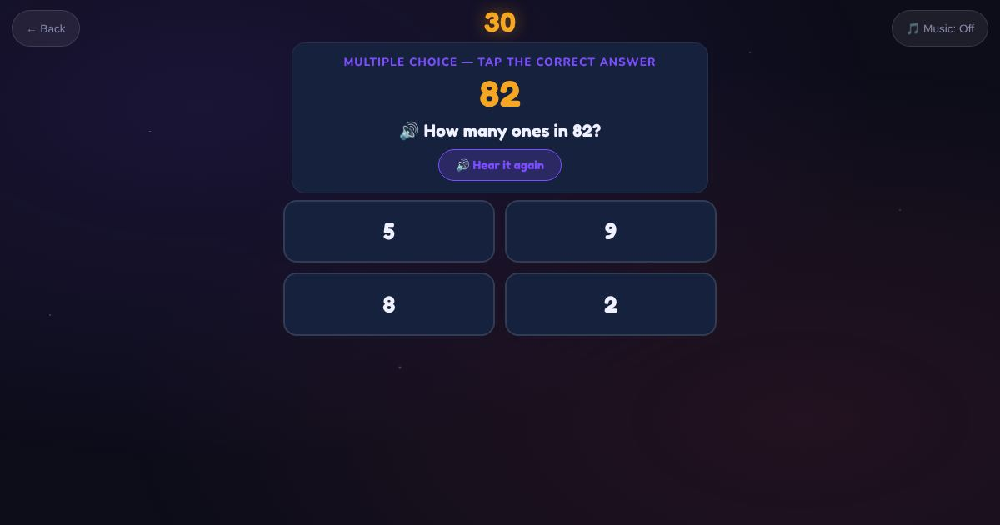

For teachers and tutors
About Tens and Ones
A place value game for the numbers 11 to 99. The learner sees a number and answers "How many tens?" or "How many ones?". The question is spoken as well as shown.

How to play
- Look at the number.
- Listen to the question.
- Tap the answer.
Play it as a class
Choose Tens and Ones in the Teacher Game.